World progression
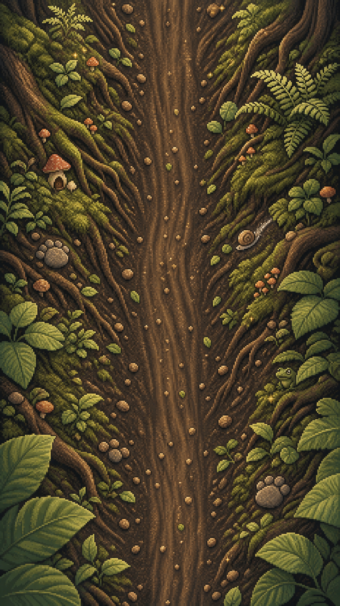
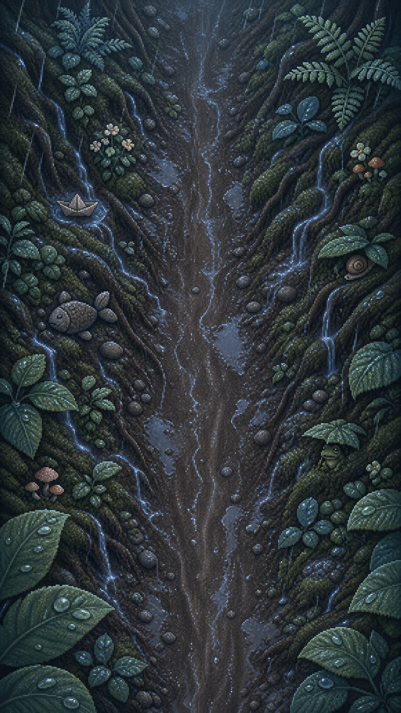
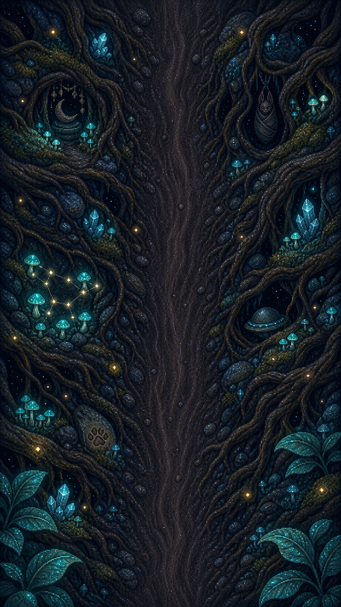
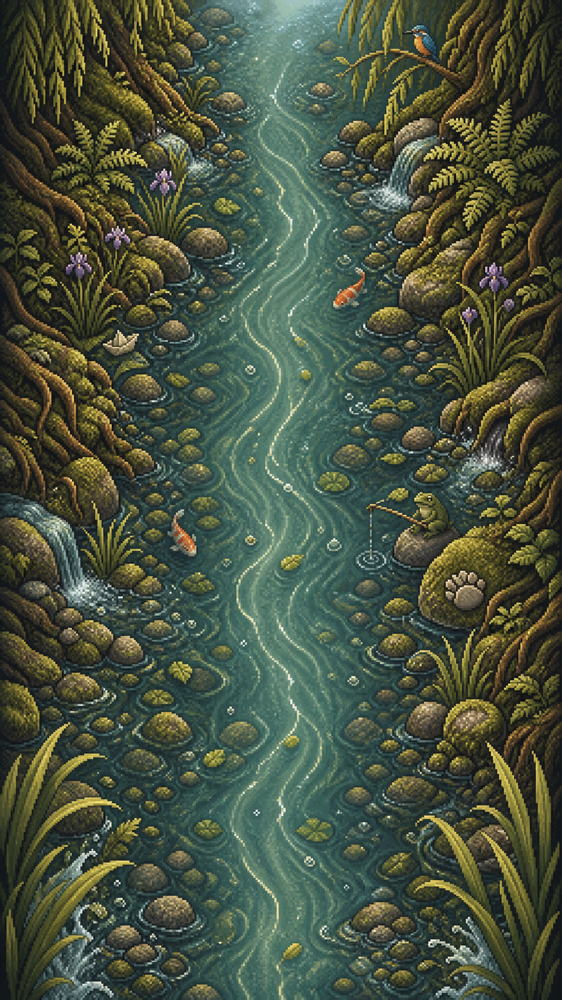
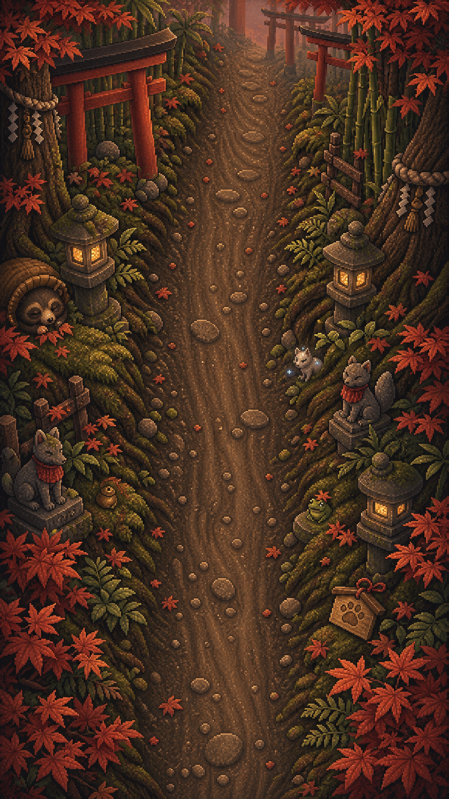
Transparent production atlases
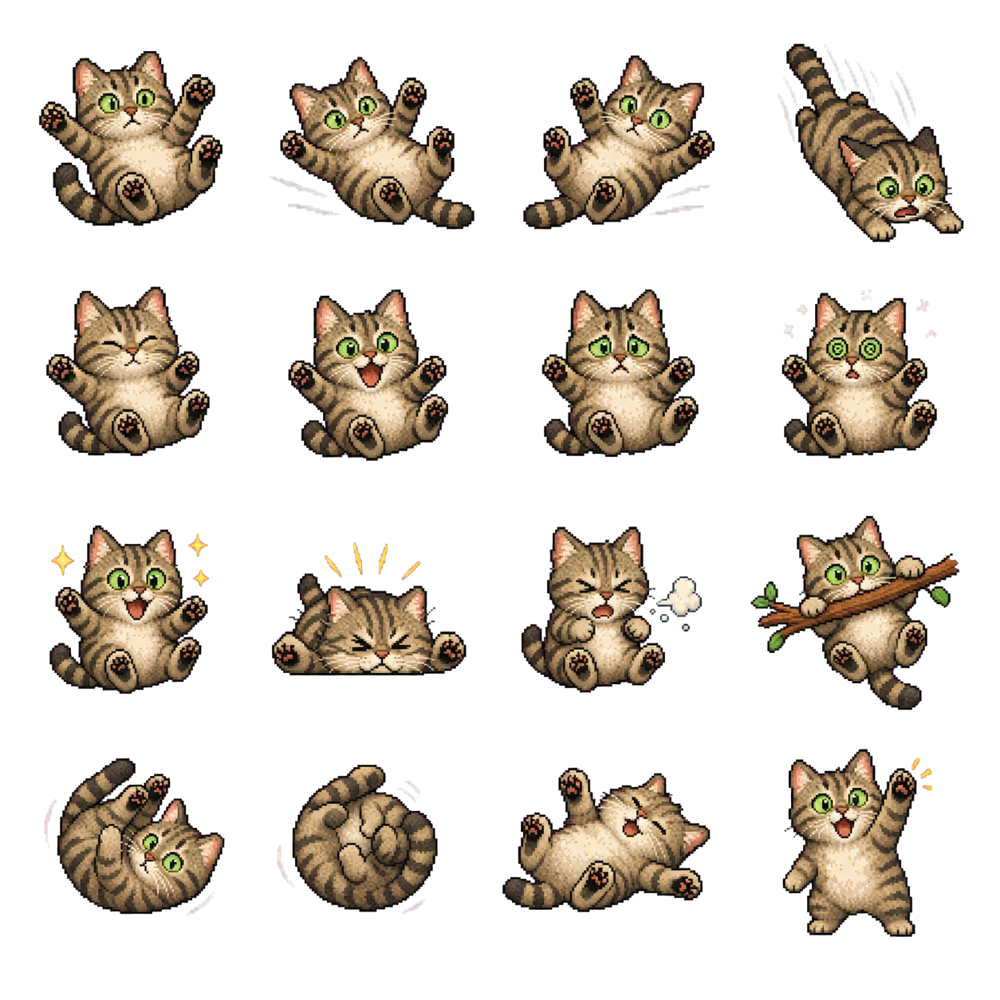
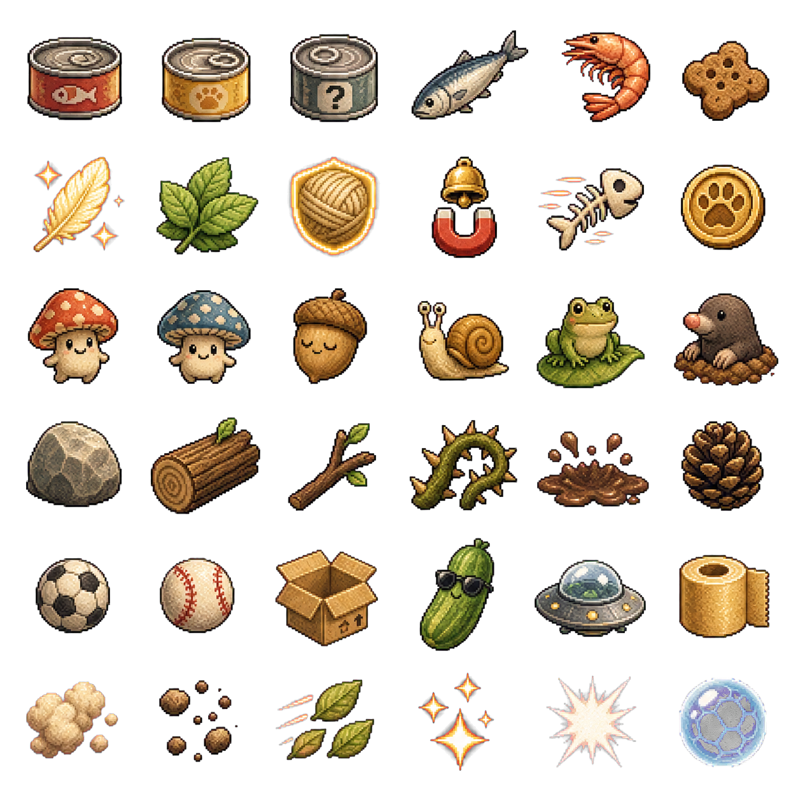
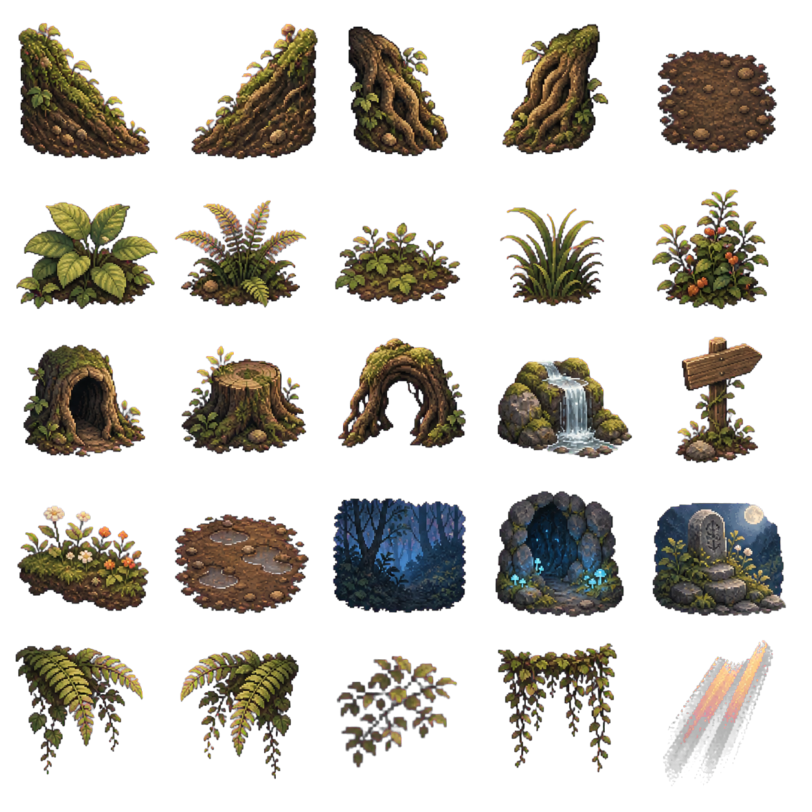
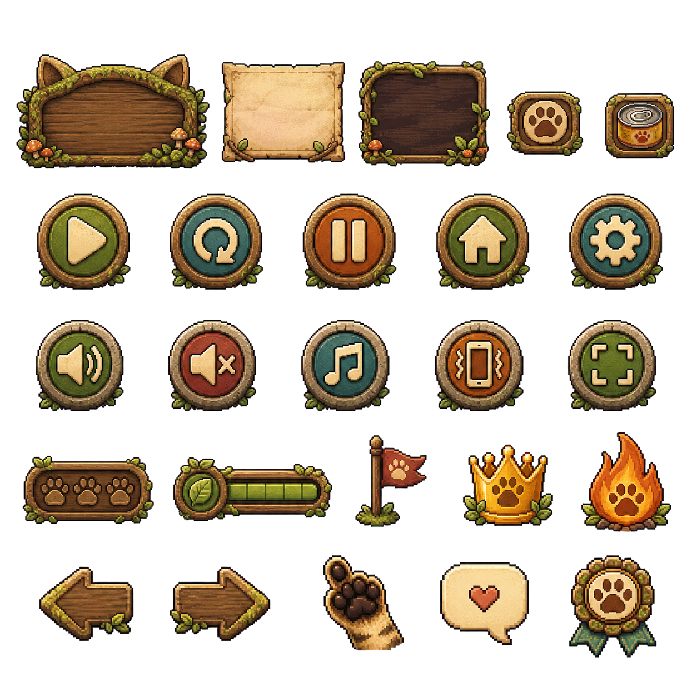
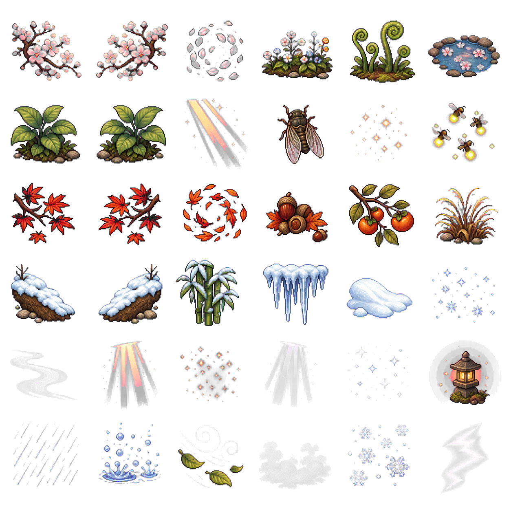
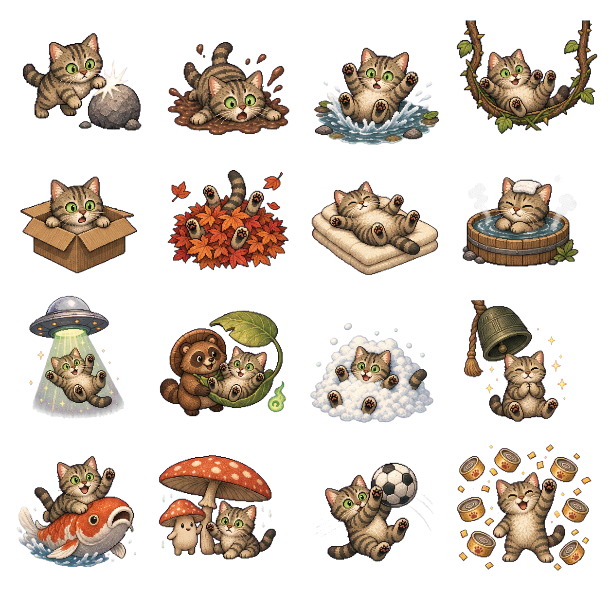
Every atlas is also sliced into named individual PNG files. The source chroma sheets are retained, and the machine-readable manifest lists the exact sprite order.
Shareable replay frame
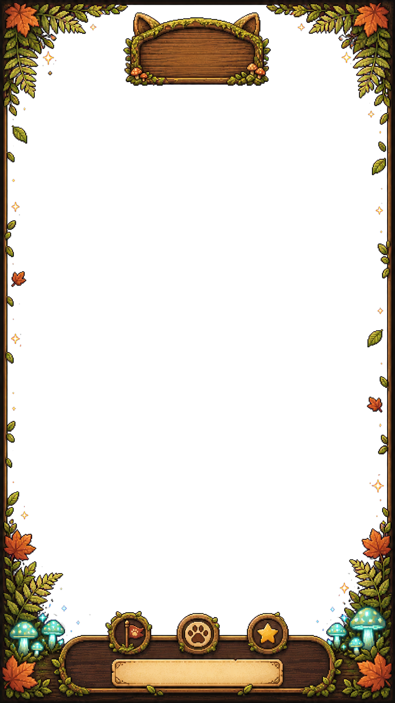
Art-direction target
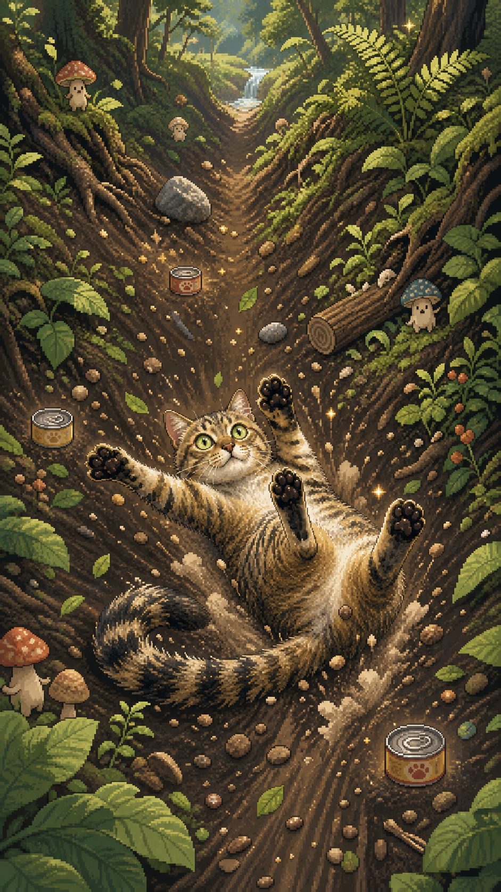